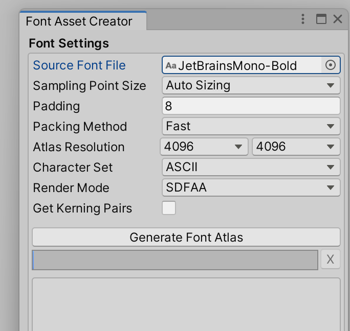

Unity TextMeshPro용 Font 만들기
- Font Asset 만드는 순서
Google,Adobe,Naver 등 사이트에서 원하시는 Font를 구합니다.
위의 설정 메뉴를 따라 이동하셔서 Font Asset Creator를 선택을 합니다.
Source Font File에 Font를 드래그 드랍한다.
 Generate Font Atlas 클릭을 합니다.
완성된 Asset을 저장을 합니다.
Atlas Population Mode | Sampling Font Size |
|---|---|
Dynamic | 대략 50 ~ 80 |
- 폰트 변경후에는 다양한 테스트를 시도해봅니다.
Last modified: 16 October 2024